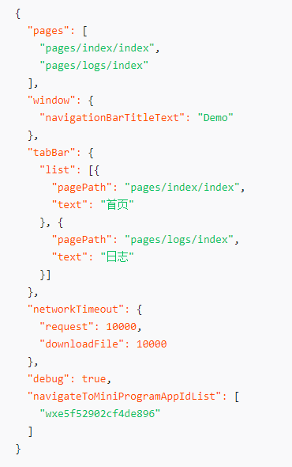
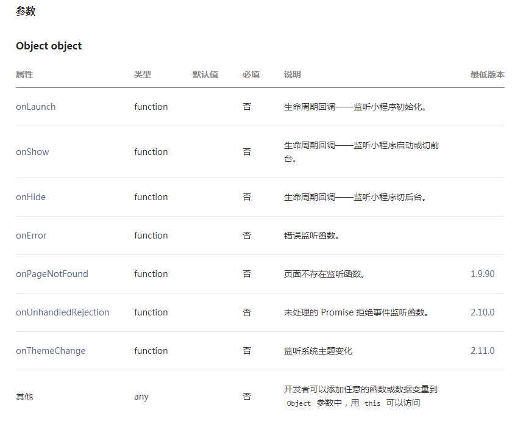
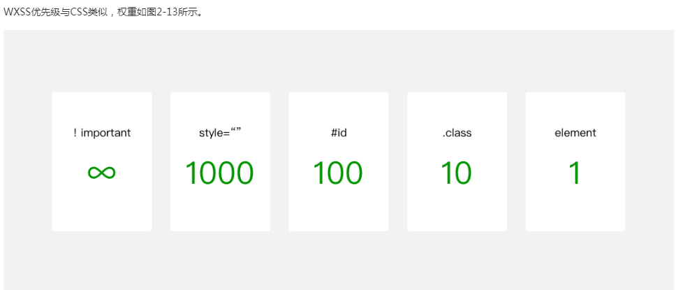
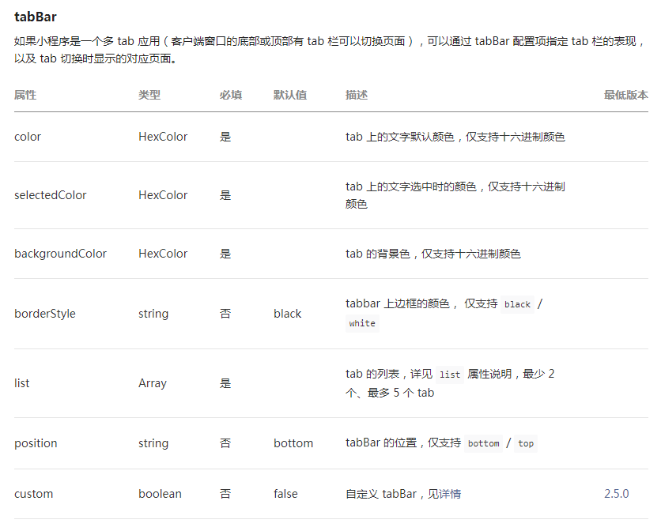
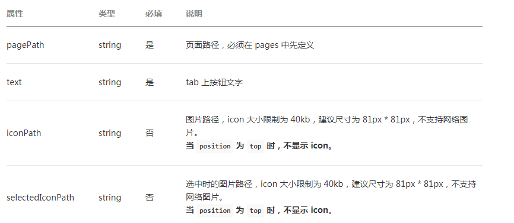
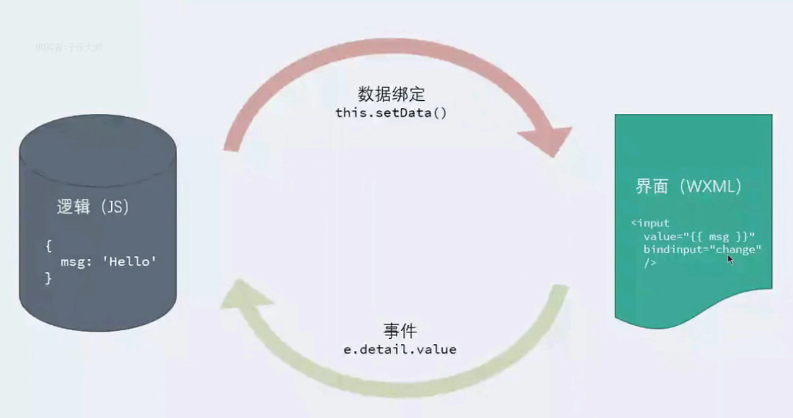
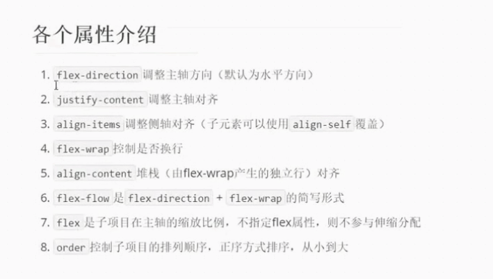
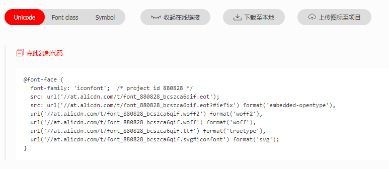
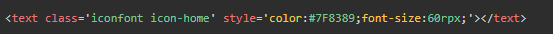

小程序简介
小程序是基于微信的一个开发平台，可以在这个平台开发各种应用来运行在IOS或Andriod上。
小程序启动时首先找 app.json app.js app.wxss
小程序的项目结构
应用程序实例app、页面pages和工具utils
每个页面包括下面4种文件
- json(页面配置)
- js(页面逻辑)
- wxss(页面样式) 比CSS高级一些，单位 rpx
- 微信标记语言wxml(页面布局)，它是基于XML的,必须有闭合标签
json格式说明 JSON的值只能是以下6种数据格式，其他任何格式都会触发报错
- 数字，包含浮点数和整数
- 字符串，需要包裹在双引号中
- Bool值，true 或者 false
- 数组，需要包裹在方括号中 []
- 对象，需要包裹在大括号中 {}
- Null
还需要注意的是 JSON 文件中无法使用注释，试图添加注释将会引发报错。
忘了给 Key 值加双引号或者是把双引号写成单引号是常见错误
app.json配置

- pages: 页面路径列表 （是一个字符串数组，不需要写扩展名！目录中的所有文件js json wxml wxss 的文件名一样。）
- window: 全局默认的窗口
- tab: 底部tab栏
- networkTimeout: 网络超时时间
- debug: 是否开启调试模式，默认关闭
调用了一个全局app(object)方法,注册小程序。接受一个 Object 参数，其指定小程序的生命周期回调等。
App() 必须在 app.js 中调用，必须调用且只能调用一次。不然会出现无法预期的后果
调用app()方法的作用：
- 1 就是用来创建应用程序实例对象！！！
- 2 定义应用程序声明周期的事件处理方法

为了减轻开发者样式开发的工作量，我们提供了WeUI.wxss基础样式库。
app.wxss 全局样式
在这个文件的定义的样式是全局共享的，即各个页面可以引用这个文件的样式。
在小程序中，我们依然可以实现样式的引用，样式引用是这样写：@import './test_0.wxss'
由于WXSS最终会被编译打包到目标文件中，用户只需要下载一次，在使用过程中不会因为样式的引用而产生多余的文件请求。
小程序支持动态更新内联样式：
{
eleColor: 'red',
eleFontsize: '48rpx'
}
< view> style="color: {{eleColor}}; font-size: {{eleFontsize}}">< / view >

小程序 javascript - ECMAScript + 小程序框架 + 小程序API
浏览器 javascript - ECMAScript + DOM + BOM
NodeJS javascript - ECMAScript + NPM + Native
为了帮助开发者解决这类问题，小程序IDE提供语法转码工具帮助开发者，将 ECMAScript 6代码转为 ECMAScript 5代码，从而在所有的环境都能得到很好的执行。开发者需要在项目设置中，勾选 ES6 转 ES5 开启此功能。
同浏览器不同，小程序中可以将任何一个JavaScript 文件作为一个模块，通过module.exports 对外暴露接口。
小程序的执行的入口文件是 app.js 。并且会根据其中 require 的模块顺序决定文件的运行顺序
同浏览器中运行的脚本文件有所不同，小程序的脚本的作用域同 NodeJS 更为相似。在文件中声明的变量和函数只在该文件中有效，不同的文件中可以声明相同名字的变量和函数，不会互相影响
当需要使用全局变量的时，通过使用全局函数 getApp() 获取全局的实例，并设置相关属性值，来达到设置全局变量的目的
// 获取全局变量
var global = getApp()
global.globalValue = 'globalValue'
小程序的页面结构 wxml js json wxss
小程序启动后，首先找app.json中的pages属性里的第一个成员作为默认页面
页面中的index.json | logs.json ..... 配置会覆盖 app.json中的window的配置。
标签栏的设置

其中 list 接受一个数组，只能配置最少 2 个、最多 5 个 tab。tab 按数组的顺序排序，每个项都是一个对象

小程序中逻辑(js文件)与界面(wxml wxss)的分离结构
小程序中的js与web开发的js的区别
- 1 小程序并不运行在浏览器中，所以并没有 BOM DOM对象 即没有 window 和 document对象。
- 2 小程序的 js 有些额外的全局成员
- App()定义应用程序实例
- Page()定义页面对象
- getApp()获取应用程序实例
- getCurrentPages() 获取当前页面的调用栈(返回一个数组，数组最后一项就是当前页面)
- wx 用来提供核心API
- 3 小程序的JS 是支持 CommonJS 规范的。即可以使用require载入模块，通过exports导出模块成员

注意：小程序中，模块的导入支持 module.exports = {} ； 不支持 exports.say = {} 格式
界面层 - 数据绑定
WXML 中的动态数据均来自对应 Page 的 data。data就是界面和逻辑的桥梁
在页面的js文件 index.js ，会调用 Page(object)方法来创建页面
数据绑定可以作用在
- 内容
- 标签的属性 需要在双引号内
- 控制属性(需要在双引号之内)
- {{ .... }} 里面可以是简单的字面量(字符串 数值 数组 对象等) 或者 表达式
wx:if 是根据布尔值来决定是否显示（动态创建）。
特别注意checkbox：不要直接写 checked="false"，其计算结果是一个字符串，
转成 boolean 类型后代表真值,即checkbox被选中。
应该 checked = "{{false}}"
在组件上使用 wx:for 控制属性绑定一个数组，即可使用数组中各项的数据重复渲染该组件。默认数组的当前项的下标变量名默认为 index，数组当前项的变量名默认为 item
如果在data中有 item 或 index 这样的属性，为了避免冲突，可以用wx:for-item 重新定义item!!index也类似
使用 wx:for-item 可以指定数组当前元素的变量名，使用 wx:for-index 可以指定数组当前下标的变量名：
wx:for 也可以嵌套
类似 block wx:if，也可以将 wx:for 用在block标签上，以渲染一个包含多节点的结构块
当 wx:for 的值为字符串时，会将字符串解析成字符串数组
block --- 只是控制属性的载体，在页面实际渲染中没有实际意义,即渲染中不存在的！！！起到一个整体控制的功能。
wx:if 与 hidden 区别，hidden 标签仍然工作，只是控制显示与隐藏。而 wx:if 是惰性的，条件为假元素不存在。从速度上，hidden更快，但是页面损耗更大。
【动态生成标签属性值】利用数据绑定动态生成 class 等标签的属性 ：如，class = "item {{ item.completed? 'completed' : '' }}"
获取列表的某项数据：var item = this.data.todos[e.currentTarget.dataset.index];需要在item上设置 data-index = "{{ index }}"
arrs.forEach((element,index) => { .... });
界面层 事件处理
事件名称 bindtap = "bindtapHandle" 命名规则是 bind + 一个事件名 类似web开发 on + 事件名
小程序的事件冒泡与web一样，阻止事件冒泡 catchtap(绑定事件处理并阻止冒泡) 即 catch + 事件名 就可以阻止冒泡了
事件传参 ： 在是元素中使用 data-xxxx 来定义数据，在事件参数 e.target.dataset 获取 这些数据。多个中划线的解析：data-hello-world = "xxx" 在解析是 helloWorld
事件处理函数中的 this 是页面对象，而不是 触发事件的元素，这个和web开发不一样！！
常用事件
- bindtap catchtap
- 在input文本框中点击完成（模拟器中按回车）触发 bindconfirm
单向数据流
小程序没有双向数据流机制，所有数据流都是 【单向】 【一次的】 的。通过事件处理实现数据的同步。在事件处理中使用 setData方法！！来实现同步
setData(对象)可以通知界面做出变化，而直接赋值没有办法通知界面（尽管数据已经改变。）

小程序表单的提交按钮 form-type = "submit" , 这个form-type 类似web的按钮的 type属性。
界面层 wxss
对比web开发的CSS , wxss主要的扩充和更改是： 尺寸单位 rpx （responsize pixel） (只能在小程序中使用)
在PC端，1px对应一个物理像素，但是在移动端十分精细，1px对应的是多个物理像素！！！！比如：iphone6 水平750物理像素，我们设置375px就占满了!!!
虽然可以用 100% 来占满整个屏幕，但是如果布局多层嵌套，里层元素的宽度设置很麻烦，必须将100%一层一层传递下去。
在小程序中，所有的设备的水平都统一 750 rpx ，因此不同设备的1px 对应的 rpx 是不相等的。
在小程序中，所有设备的水平也可以使用 20rem ，即 20rem == 750rpx ,rem可以使用小数。
rpx 目的是为了让我们在不同的设备之间使用相同的一套代码！！！
小程序 UI(user interface)
- 组件是视图层的基本组成单元
- 组件自带微信风格样式
- 组件通常包括开始和结束标签，所有组件的属性都是小写，以连接符 - 连接
- wxml 是遵循 XML 语言，必须有闭合标签(无论是单标签和双标签)
基础内容组件
- icon [type] [size] [color]
- text (类似于 html 的 P 标签，不能嵌套。) ,不同于p标签的是text可以嵌套以及换行通过文本来控制！！！
- rich-text
- progress 单标签 [percent] [show-info] [stroke-width] [color] [active]
如果组件的属性是布尔值 直接加上就可以。
- button [type 控制按钮的类型 只有三种 primary default warn] [size] [plain] [form-type = submit reset] [disabled] [hover-class]
- checkbox
- radio
- form [bindsubmit事件] [bindreset事件]
- input [placeholder] [placeholder-class]
操作反馈 wx API 通过调用API方法来使用
- wx.showToast(Object object) 显示消息提示框
- wx.showModal(Object object) 显示模态框
- wx.showLoading(Object object) 显示 loading 提示框。需主动调用 wx.hideLoading 才能关闭提示框
- wx.showActionSheet(Object object) 显示操作菜单
- wx.hideToast(Object object) 隐藏消息提示框
- wx.hideLoading(Object object) 隐藏 loading 提示框
小程序布局
flex-box 伸缩布局

- flex-direction : 调整主轴方向 默认水平
- justify-content : 调整主轴方向的对齐
- align-items : 调整侧轴方向的对齐
- flex-wrap : 控制是否换行
- align-content : 堆栈对齐（由flex-wrap产生的独立行）
- order : 控制子项目的排序方式
在实际开发中,我们一般不设置容器的高度，容器的高度由内部元素撑起来。这样做也起到 固比模型 的固定高度部分。
display:flex 默认是主轴水平, 如果需要侧轴（垂直）的水平对齐 align-items:center;
小程序页面跳转
快速创建新目录和页面文件（wxml wxss json js），通过配置 app.json 的 pages属性，然后保存。
新创建的json文件不能为空，这样系统无法解析，至少一个空对象 {}
页面跳转组件：navigator , url为相对路劲。
页面传值
传值时使用 url 类似web传参：xxxxx?name=小明&age=18
接收使用 onload事件（加载完成）的参数 options 对象。
导航模式 添加属性 redirect
点击高亮 添加属性 hover-class = "设置class" 如果要没有效果 hover-class = "none"
对于其他元素点击高亮，可以通过设置class="类名" 在样式中设置 cursor : pointer 即可。
使用代码导航 调用微信接口： wx.navigateTo() 或 wx.redirectTo() redirect不产生访问历史 相当于 navigator + redirect模式; 传参的方式同样在url 后 + xxxx?name=liping&age=10
wx.navigatrBack() 默认是返回上一页。如果要返回指定的某一页，可以设置 delta 的值（向上返回几层。）当delta过大，超出历史记录，默认返回最开始的页面
- 1 在小程序中创建文件 iconfont.wxss
- 2 登录iconfont下载项目，复制iconfont.css的内容到上面创建的 iconfont.wxss中。
- 3 生成代码 并复制替换iconfont.wxss中的@font-face
- 1 登录iconfont下载项目，并生成代码(Unicode)复制替换下载的文件iconfont.css中的@font-face中的内容
- 2 在小程序创建 iconfont.wxss,复制iconfont.css的内容到 iconfont.wxss中
- 3 在其他index.wxss中引入iconfont.wxss，代码： @import "路径/iconfont.wxss";
- 4 使用代码：
- 